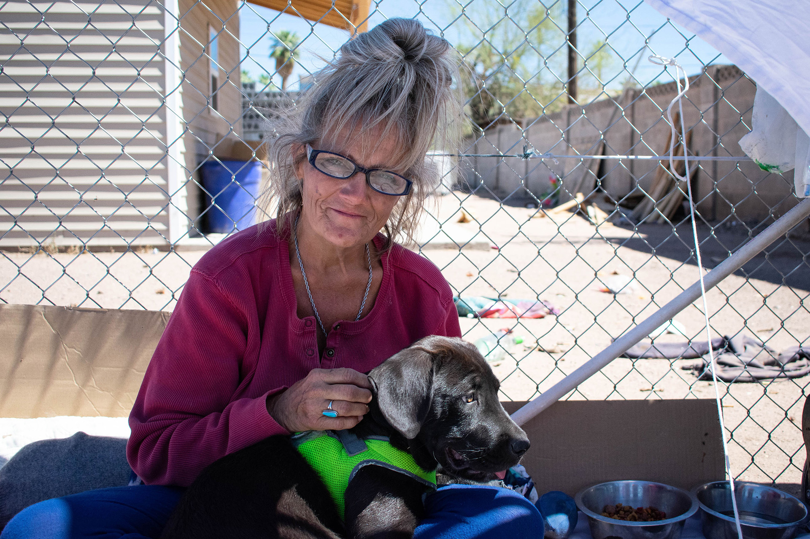
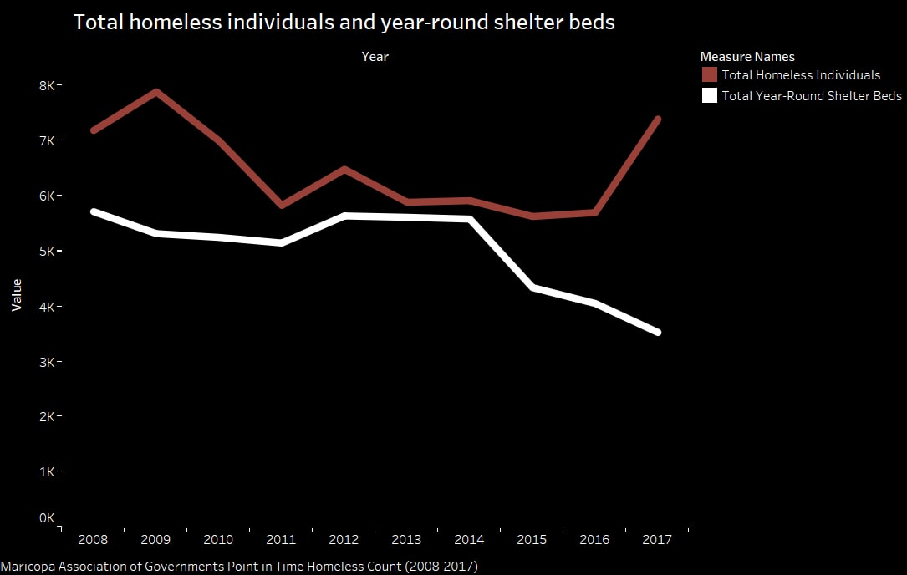

As of 2018, about 2,600 people in Maricopa County do not have a dependable place to sleep at night. They represent the unsheltered homeless population in Arizona’s largest and most populated county, which consists of 24 cities, including Phoenix.
But there is more to the issue of homelessness than meets the eye.
More than half of Arizona's homeless population lives in Maricopa County, where the unsheltered population rose by 25 percent from 2016 to 2017 alone, according to the Arizona Department of Economic Security (DES) Homelessness 2017 annual report.
UNSHELTERED takes a closer look at the homeless population in Phoenix, the daily challenges they encounter and the available resources.
Each year, the federal Housing and Urban Development (HUD) requires regions across the nation to annually conduct a Point-in-Time Homeless Count (PIT) on a single day at the end of January. The count is used to estimate the amount of individuals experiencing homelessness, including those who are sheltered and unsheltered.
The Maricopa Association of Governments (MAG) oversees the PIT count. Maggie Wong, a human services planner for MAG, said it’s important to look at other data to supplement the single-day count because it only provides a snapshot of the situation.
The number of beds in Maricopa County have decreased over the past decade as the amount of people experiencing homelessness has increased.
Feel free to follow us on our social media